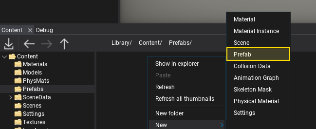
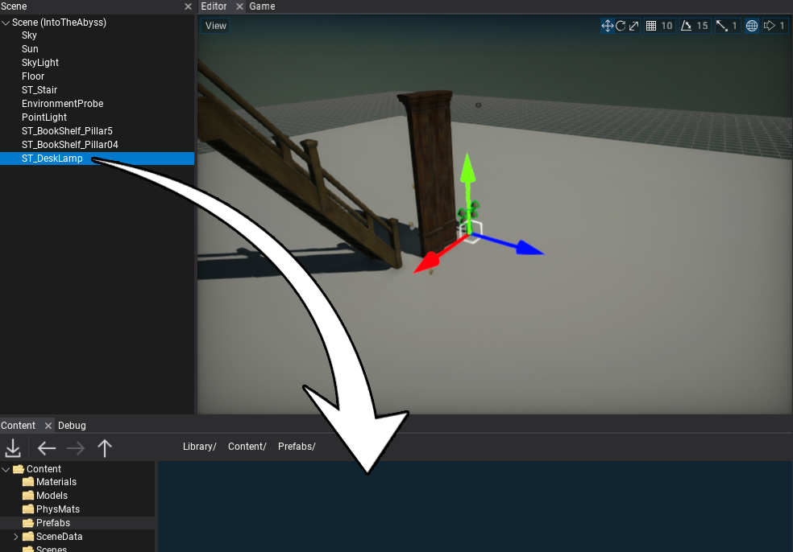

HOWTO: Create prefab
In this tutorial, you will learn how to create a new prefab asset. Follow the instructions to see how to do it. In Flax, there are 3 main ways to create a prefab asset. Use the one that fits your workflow the most.
New Prefab
The easiest option to create an empty prefab is by using Content Window. Right-click and choose option New -> Prefab. Then double-click and edit your new asset.

Drag and Drop
Another way to create a new prefab asset is by using the existing actors as an archetype. To do it simply select the actor on a scene that you want to turn into a prefab and drag it into the Content Window. Specify its name and hit enter to confirm. Then double-click and edit your new asset.

From code
The last way to create a new prefab is by using an editor script that creates a new prefab asset using Flax C# API.
// Setup prefab objects
var myLight = new PointLight();
myLight.Color = Color.Red;
var myDecal = new Decal();
myDecal.Parent = myLight;
// Create a prefab
Editor.CreatePrefab(StringUtils.CombinePaths(Globals.ProjectContentFolder, "myPrefab.prefab"), myLight, false);